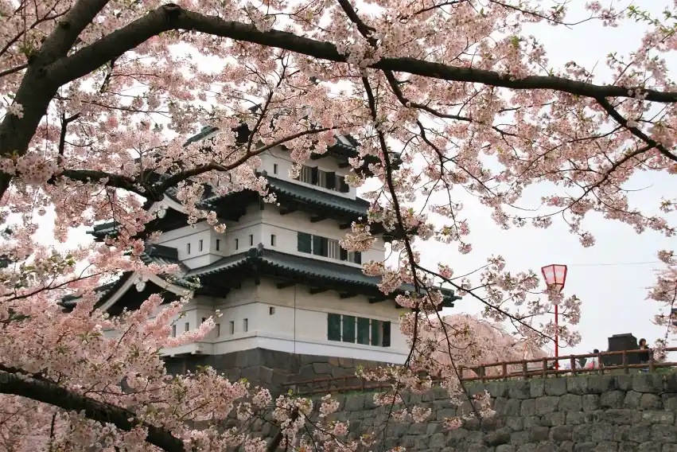

Festival
Experience the heartbeat of Japan through its vibrant festivals, each a kaleidoscope of colors, sounds, and cultural pride.
Gion Matsuri
| Description |
|---|
| The Gion Matsuri began in 869 as a way to appease the gods during an epidemic. Every year, as per tradition, a local boy is chosen as a sacred messenger to the gods. From July 13 until the first parade ends on July 17, he sits on one of the many elaborate floats and his feet never touch the ground. There are two types of floats at the Gion Festival: yama and hoko. Hoko can be up to 25 meters tall and weigh up to 12 tons. Both yama and hoko are elaborately decorated and adorned with exquisite craftwork such as woven fabric, dyed textiles, and sculptures. They are so beautiful that they are sometimes referred to as "mobile art museums." There are two processions during the festival when the floats are paraded through downtown Kyoto from 9 a.m. to 2 p.m. The largest of the two is on July 17 with 23 floats, and the second on July 24 with about half that number. |
Hisoraki Cherry Blossom Festival

| Description |
|---|
| The roots of the Hirosaki Cherry Blossom Festival trace back to the Edo Period when the Tsugaru clan planted 25 Kasumizakura cherry trees from Kyoto around Hirosaki Castle in 1715. Proud of his outstanding pink beauties, the feudal lord at the time would throw elaborate sakura-viewing parties which eventually evolved to become the Hirosaki Cherry Blossom Festival that we know and love today. Today, the castle grounds are now a public park where 2,600 cherry blossom trees of over 50 varieties grace over 2,000,000 visitors who visit annually during the two-week duration of the festival. |
Sapporo Snow Festival
| Description |
|---|
| In 1950, a festival was held in conjunction with snowball fights, snow sculpture exhibitions, and a carnival. Despite low expectations, more than 50 thousand people showed up to the event. Following this, the snow festival became known as a seasonal event held every winter by the city citizens. The 10th-year anniversary in 1959 saw the rallying of 2,500 participants in the making of the snow sculptures. This was also the first time the event was introduced on television stations and newspaper articles. Accordingly, due to the exposure gained from the media, the following year's festival became a huge success with an increase in the number of tourists from Honshu. Began in 1974 at the 25th Sapporo Snow Festival, the International Snow Sculpture Contest is an event in which teams from countries, regions, and cities from around the world compete to create snow sculptures. |
Wakakusa Yamayaki: The Mountain Burning Festival
| Description |
|---|
| On the fourth Saturday of each January, the dead grass is set on fire. This is known as “Yamayaki,” which is literally, “mountain roast.” The origins of Wakakusa Yamayaki are unclear, but the tradition supposedly originated from a boundary dispute between two temples, Todai-ji and Kōfuku-ji in 1760. When the mediations failed, the entire mountain was set ablaze. Another theory claims that the fires were set to drive away wild boars. Today, the ceremonies are conducted by Todaiji Temple, Kofukuji Temple, and Kasuga Shrine. The festivities start with the ceremonial lighting of a torch at Kasuga Taisha Shrine. The fire is then carried in a parade to the foot of the mountain where a large bonfire is lit. At 6 p.m., there is a spectacular fireworks display over the mountain. Once the fireworks are complete, the grass on the mountain is set on fire. The burning of the mountain can take anywhere from 30 minutes to one hour depending on how dry the grass is. The spectacular fire can be seen from all over Nara. |